-
Download sample data in required formats from:
http://bioputer.mimuw.edu.pl/veppin.

-
Click "New" to open the data loading panel.
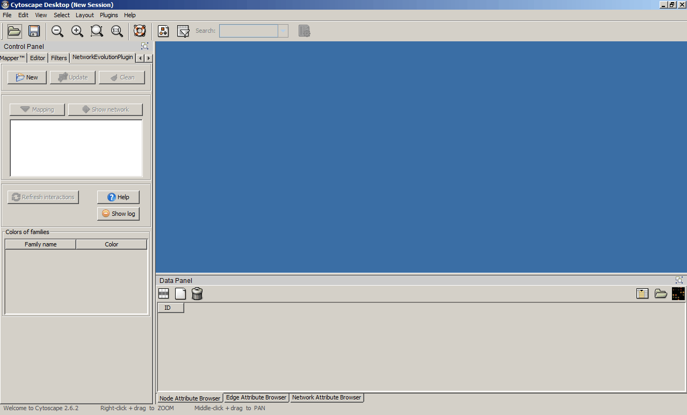
-
Choose the species tree file, and click "Load".
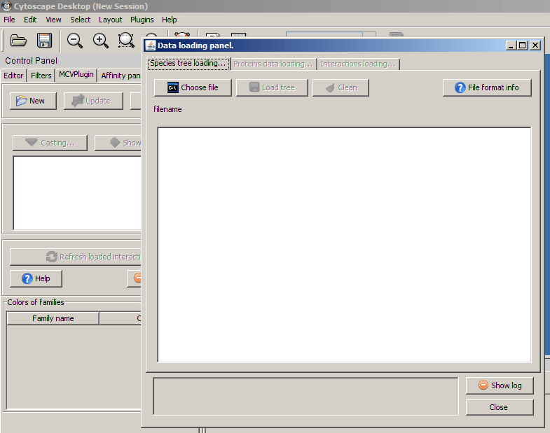
-
You should see the loaded species tree.
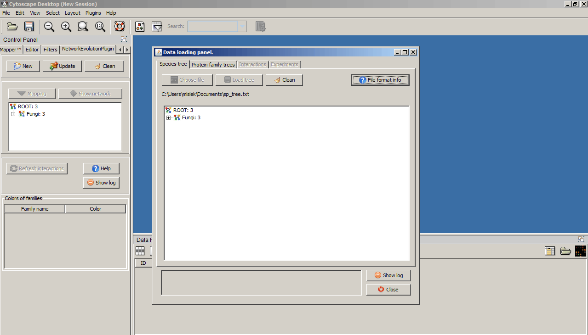
-
Change tab to "Protein family trees" and do the same for protein family tree
data.
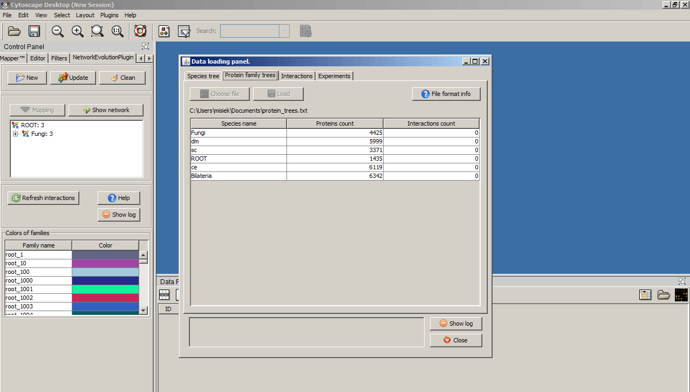
-
Change tab to "Interactions". Select the cutoff value and choose file
with interactions data for all species.
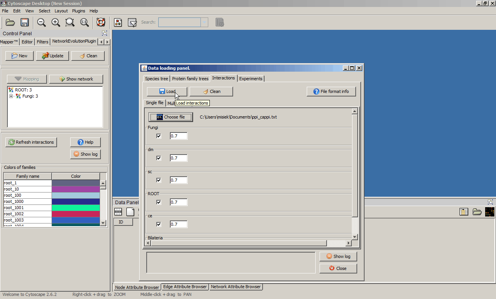
-
Interactions are loding...
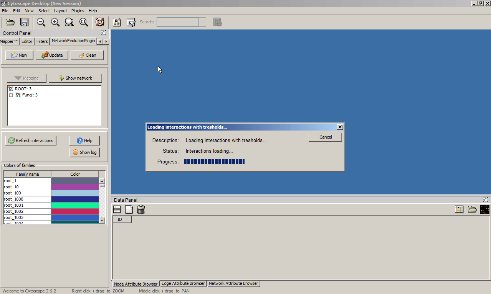
-
(Optional) Change tab to experiments, choose appropriate file and load.
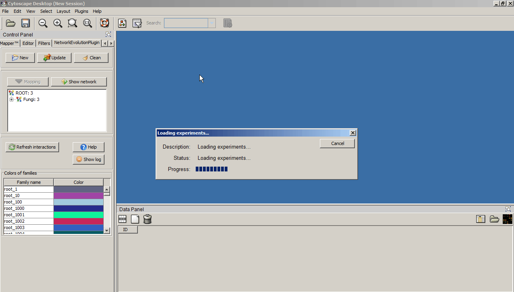
-
Select "Fungi" on species tree, and click the "Show network" button.
The fungi PPI network will be shown.
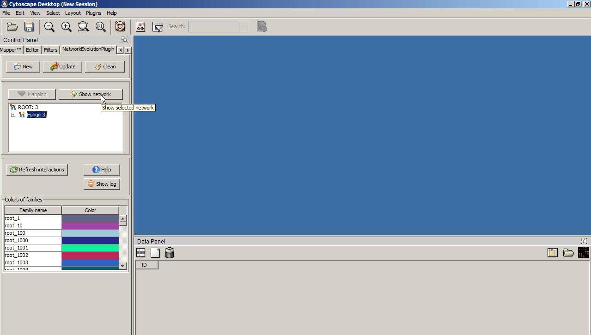
-
Change tab to the "APGraphClustering". Click "Refresh" to load edge attributes,
then click refresh to recalculate preferences as a median of wieghts on edges.
Then click the "Start" button to cluster the network.

-
You should see a screen similar to the one below.
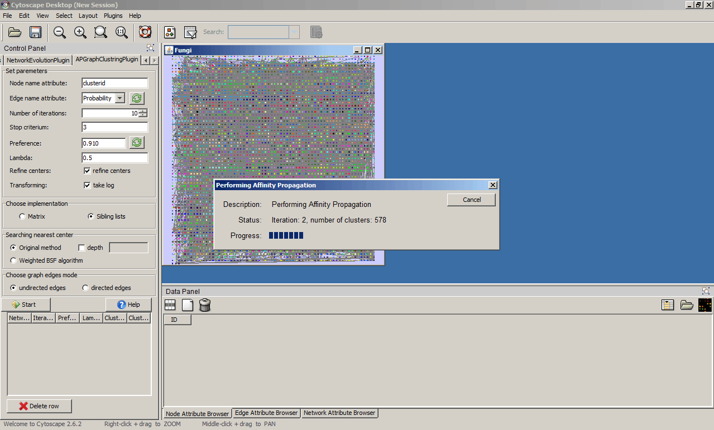
-
Now you can visualize the clustering results with an appropriate Cytoscape layout.
Select Cytoscape Layouts -> Group Attributes Layout -> clusterid.
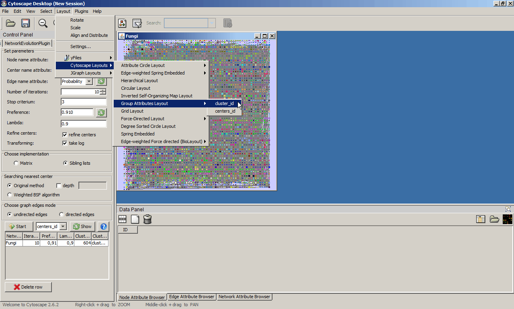
-
Select one of the clusters.

-
Select: sc, dm, ce and sc_EXP (experiments) from species tree and click "Mapping".
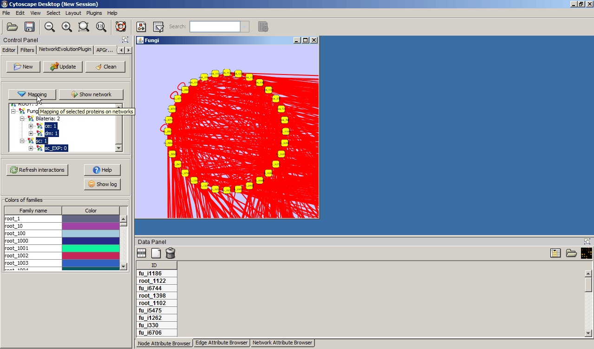
-
You should get three new network diagrams representing the mapping of the selected module onto the three selected interactomes.
The colors of the nodes and the layout makes it easy to visually compare the resulting subnetworks between themselves and with the original subnetwork in the Fungi interactome.